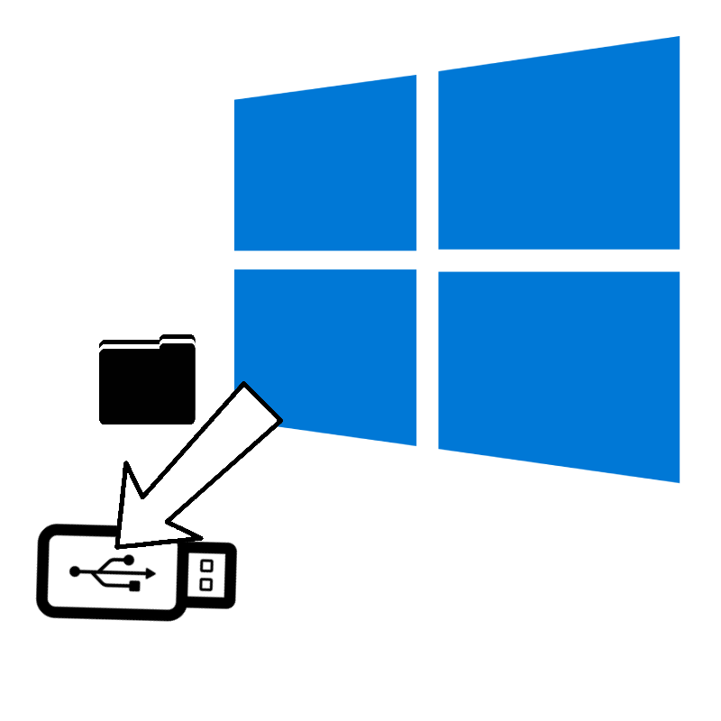

https://github.com/Adock90/winrecopy/releases/download/winrecopy/winrecopy.exe

A lightweight tool designed to run in WinRE to copy unbacked up files onto a USB
For more details visit the GitHub repo
Written in: C